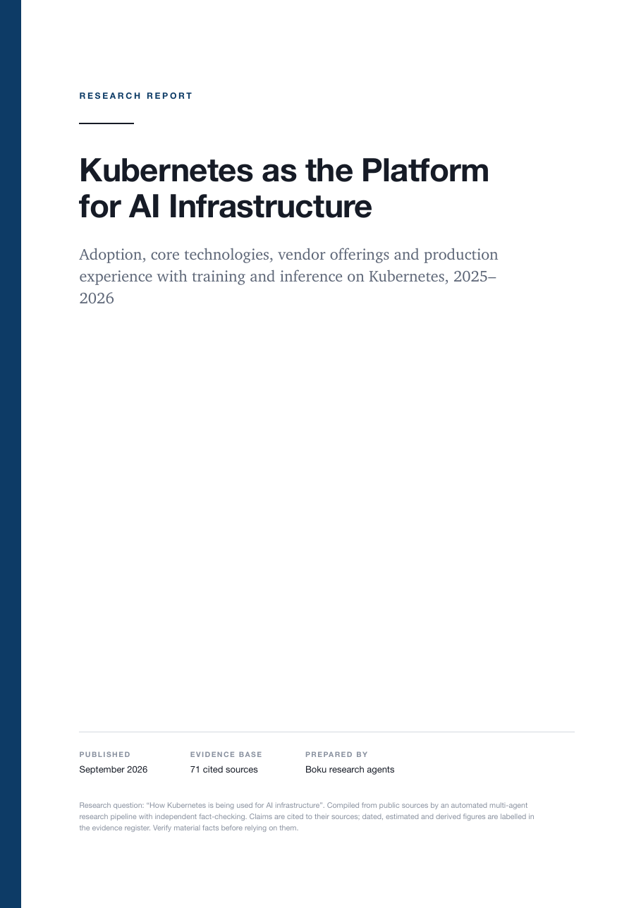
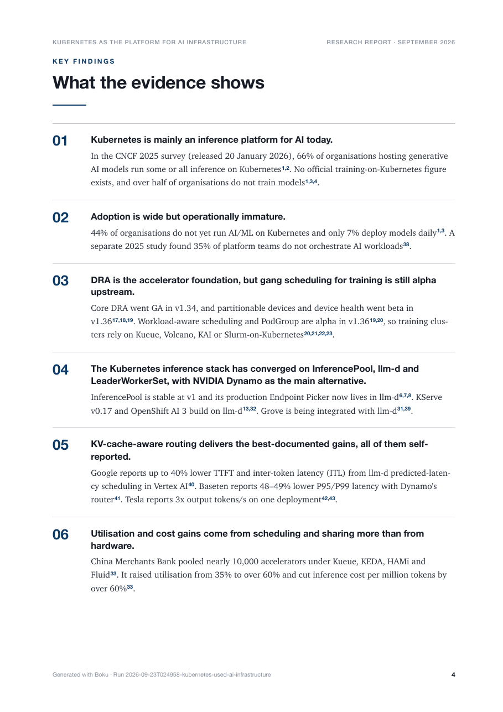
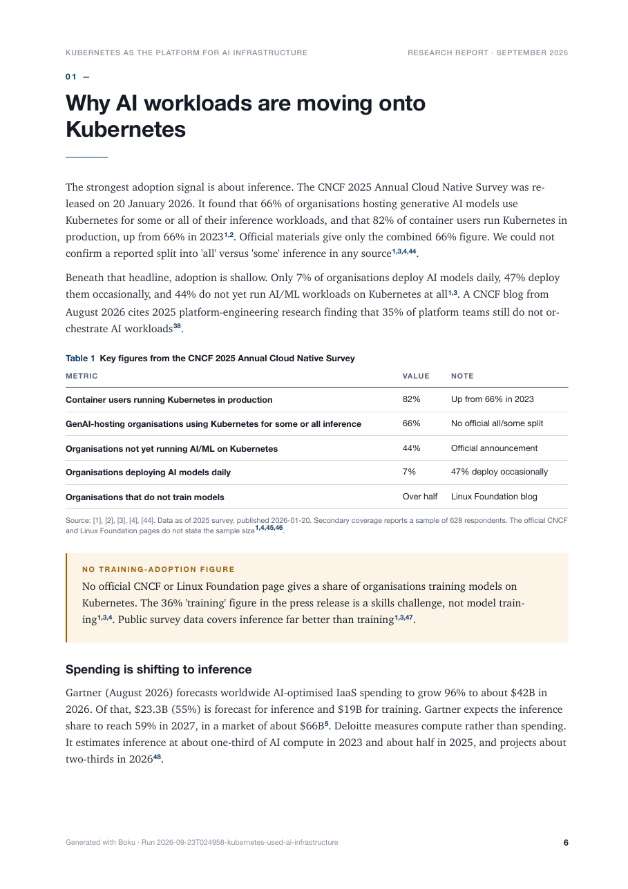
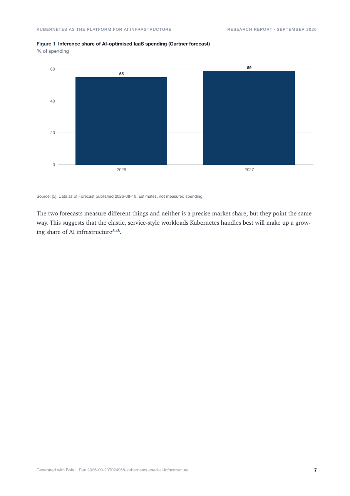

Full report
The default. Built for decisions that need evidence.
- Planner chooses 1–6 research roles
- Fact-checker rejects claims, orders follow-ups
- Cover, contents, charts, diagrams, methodology
$ boku report "How are banks deploying GenAI?"
Give Boku a question. A team of agents plans the research, searches in parallel, lets an independent critic reject weak claims, and writes a typeset PDF where every sentence cites its source and every chart traces to evidence.
This is a replay of a real run, compressed about 30×: 11 agent calls, 72 findings from 77 sources, two follow-up tasks requested by the fact-checker, $7.73 reported by Claude Code. Switch modes to see what changes.
2026-09-23T024958 (--depth quick).Spend is dominated by the research agents reading the web, not by writing. Numbers below are from real runs, as reported by Claude Code (total_cost_usd) and recorded in each run's manifest.json.
Each bar is one report; segments are the cost of each role.
Pick per report with a flag. Default is full.
| Mode | Typical spend | What you get |
|---|---|---|
| Fulldefault | $8–31measured | Planner, up to 6 researchers, fact-check rounds with follow-ups, 15–40 page report. |
Short--short | ≈ $4–6estimate | 3 researchers, one fact-check round, a compact 3–8 page brief. |
Quick--quick | $0local | Every agent on your Ollama model with Boku's own web search. No fact-check. A first pass. |
Short estimate: per-role costs of the --depth quick run above with 3 researchers and one fact-check round. Quick spends no API money; it uses your machine. On a Claude subscription, Claude Code usage counts against your plan rather than being billed at these figures.
No flag gives you the full report. Add one when you want something faster or cheaper; combine with --save-ref to print the source list inside the PDF.
The default. Built for decisions that need evidence.
$ boku report "How are banks deploying GenAI?"
A cited brief when you need the answer, not a book.
$ boku report "Is Postgres 18 AIO worth it?" --short
Every agent runs on a local Ollama model. Zero Claude tokens.
$ boku report "GPU sharing on Kubernetes" --quick
Citations in the text are numbers. The sources behind them go to a compact <report>.references.json, cheap to hand to another model or tool. Pass --save-ref to print them in the PDF as well.




Pages from a real 32-page report, unedited. Open the full PDF.
{"title":"Kubernetes as the Platform for AI Infrastructure",
"run_id":"2026-09-23T024958-kubernetes-used-ai-infrastructure",
"references":[
{"n":2,"title":"The CNCF Annual Cloud Native Survey: The Infrastructure of AI's Future",
"publisher":"CNCF","url":"https://www.cncf.io/reports/the-cncf-annual-cloud-native-survey/",
"published":"2026-01-01","accessed":"2026-09-23","tier":1},
{"n":5,"title":"Gartner Forecasts Worldwide AI-Optimized IaaS Spending to Grow 96% in 2026",
"publisher":"Gartner", …}
],
"evidence":[
{"id":"F052","claim":"Gartner forecasts worldwide AI-optimised IaaS spending will grow 96% in 2026 to about $42B…",
"status":"Estimated","as_of":"2026","refs":[5]}
]}
Point Boku at Ollama or any OpenAI-compatible endpoint — vLLM, LM Studio, llama.cpp, OpenRouter. Nothing changes unless you pass a config.
--max-costagents: provider: openai # claude-code | ollama | openai endpoint: http://localhost:8000/v1 model: Qwen/Qwen2.5-72B-Instruct api_key_env: OPENROUTER_API_KEY price_input_per_mtok: 0.35 price_output_per_mtok: 0.40 local: # small model for --quick and formatting model: llama3.1:8b search: engine: duckduckgo # or searxng max_pages: 12
Researchers return structured findings. The editor can cite only findings that survived fact-checking; citations are resolved by code.
Every finding carries the date it describes. Boku labels it current or historical against your window — the model never decides.
An independent fact-checker rejects unsupported claims and sends targeted follow-up research. Quality gates block publication.
A chart is drawn only if every value appears in the cited evidence. Agents supply data, never layout.
A comparison opens with its matrix, a decision with the recommendation, a one-pager stays one page. Headings follow the request.
Every artifact lands in a run directory. Interrupted runs resume where they stopped; re-rendering costs nothing.